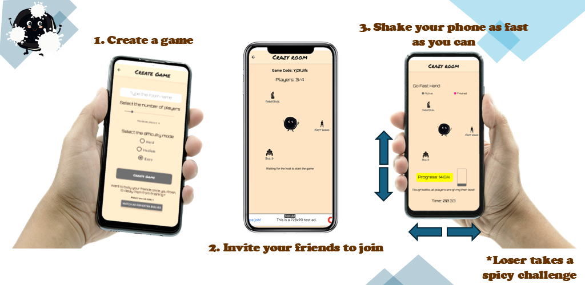

I am an M.Sc. Electrical Engineer currently working at the Regional Association of Solid Waste Management Agencies of Region of Thessaly. Previously, I worked as an Electrical Engineer in the dairy industry and as a Deep Learning researcher in Horizon projects.
Currently, I am a PhD student with research interests in Deep Learning (DL) and Fuzzy Cognitive Maps (FCMs). My hobbies include the gym, mountaineering, dance, and coding.
A Streamlit web application designed for developing and analyzing Fuzzy Cognitive Maps (FCMs). This tool aids researchers in modeling complex systems using fuzzy logic.
View on GitHubMy first mobile app! A humorous multiplayer game where the goal is to shake your smartphone faster than your friends. The loser has to accept a challenge!
 Download on Google Play